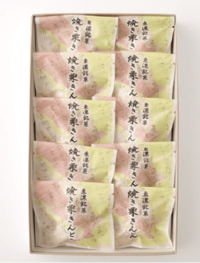

-
焼き栗きんとんとん
- 「栗きんとん」の美味しさそのまま、日持ちする焼き栗きんとんに仕上げました。職人が一つひとつ丁寧に手作りしています。
-
栗きんとん羊羹 『栗ごころ』
- しっとりなめらかな栗きんとんを、小豆香る羊羹の中に閉じ込めました。竹皮で包みじっくりと蒸すことで、美味しさを引き出します。
通常の栗きんとんはお日持ちが2～3日と短く、遠方へのお土産には適していませんでした。「遠方へ贈りたい」「もっとゆっくり味わいたい」という声に応えて生まれたのが、１ヶ月以上保存できる焼き栗きんとんです。添加物は一切使用せず、国産栗と少量の和三盆糖、水飴のみを使い、職人による特殊製法によって実現。栗きんとん本来の旨みと上品な甘さ、しっとりとした口当たりに、表面を焼き上げて焦げ目をつけることで焼き栗のような香ばしさをプラスしました。
１個ずつ丁寧に和紙で包んでから個包装しています。日頃のおやつはもちろん、来客時のお茶請けやお手土産、贈り物にも喜ばれています。
賞味期限は製造日より60日となるため、従来の栗きんとんのように慌てる心配はいりません。お好きなタイミングで、美味しい状態でお召し上がりいただけます。
香ばしく焼き上がった日持ちの良い栗きんとんと、上品に小豆が香るなめらか羊羹。上質和栗の旨味が引き立つ二種の特撰和菓子セットです。
栗きんとん羊羹『栗ごころ』
和栗の旨みと甘さを生かした自家製栗きんとんを、国産小豆と岐阜県産糸寒天で炊き上げた羊羹と竹皮で包みます。その後、蒸すことで羊羹が一度とろとろになるため、羊羹の甘さが栗きんとんに馴染み、おいしさを引き出します。時間をかけてじっくりと蒸し上げることで、余分な甘みが落ち、栗と小豆の香りが際立ち上品な味わいに。 従来の栗きんとんよりしっとりとした口当たりで、羊羹のなめらかさとよく合います。
化粧箱の掛け紙には、地元岐阜県多治見市の花でもある「桔梗」を上品にデザイン。
香ばしく焼き上がった日持ちの良い栗きんとんと、上品に小豆が香るなめらか羊羹。上質和栗の旨味が引き立つ二種の特撰和菓子セットです。
栗きんとん羊羹『栗ごころ』

香ばしく焼き上がった日持ちの良い栗きんとんと、上品に小豆が香るなめらか羊羹。上質和栗の旨味が引き立つ二種の特撰和菓子セットです。
Web・電話 にて購入受付！
Webでのご購入が困難な方に限り、お電話にてご注文を承ります。
電話注文は銀行振込のみとなります。
繋がりにくい場合は、再度お掛け直しください。
創業以来、松谷園の歴史を見てきた看板。
地元をはじめ、
全国からも注文が入る栗のお菓子
1972（昭和47）年創業、生菓子や引き菓子を冠婚葬祭場へ届けながら、和菓子店を営んでいた「御菓子処 松谷園」。商品は栗きんとんを中心に、栗きんとんを羊羹で巻いた「栗ごころ」、栗そのものを使った「栗蒸羊羹」など、栗のお菓子がメイン。数年ごとに新商品を開発し、新しい味も求めており、栗きんとんを焼いた「焼き栗きんとん」は多治見市観光協会の推奨品に認定されているなど、地元にも貢献をしています。全国からの注文も多く、大勢に親しまれている和菓子店です。
- 焼き栗きんとん
- 栗きんとん羊羹『栗ごころ』
季節や地域を感じられる
ほっとできる味わいをお届けします
岐阜県東濃地域は栗が特産。それにちなみ、お菓子には岐阜県産の栗をはじめ、厳選した国産栗を使っています。和菓子は時間が経つと味が落ちてしまうため、なるべく新鮮な状態、出来立てのままで届けられるよう、毎日丁寧に手作りしています。
御菓子処 松谷園
時／9時〜17時
休／水曜日、第3火曜日
岐阜県多治見市住吉町3-53-2
Tel.0572-26-8565
Web・電話 にて購入受付！
配送について
- 常温配送
保存について
- 焼き栗きんとん：製造日から60日
- 栗ごころ：製造日から50日
- 直射日光、高温多湿を避けて冷暗所にて保存してください（栗ごころは開封後冷蔵庫にて保存してください）。
お届けについて
- 常温にて配送します。
- お届け日・お時間帯のご希望がある場合は、ご入金が確認できる日の7日後以降をご指定ください。
- 配送の混雑状況や交通事情等により、ご希望のお届け日・お時間帯にお届けできない場合がございます。
送料について
- 焼き栗きんとん：10個入りは１箱930円、15個入は1箱1,000円
- 栗ごころ・和栗菓子二種特撰セット：１箱930円
- 同一住所への配送は2箱まで上記料金、3箱以上の場合は1,430円（15個入は1,500円）
- 沖縄・北海道への配送は+700円
返品について
- 食品のため、お客様のご事情による商品の返品・交換はお受けいたしかねます。但し、お届けの商品がお客様のご注文内容と異なる場合は対応いたします。商品到着後３日以内に弊社にご連絡いただけましたら、良品の注文商品と交換させていただきます。
- 詳細確認のため、不良箇所の画像添付をお願いする場合がございます。
- 当該商品の返送及び再送に要する送料等は、弊社にて負担いたします。
お支払い方法
-
クレジット決済
- 銀行振込
銀行振込先 ［振込手数料はお客様のご負担］
-
三菱UFJ銀行 岐阜支店
普通預金 0105882 カ)アドキットインフォケーション -
十六銀行 島支店
普通預金 1339111 カ)アドキットインフォケーション
カード決済、または代金入金確認後、申し込み順に随時発送。電話注文は銀行振込のみとなります。